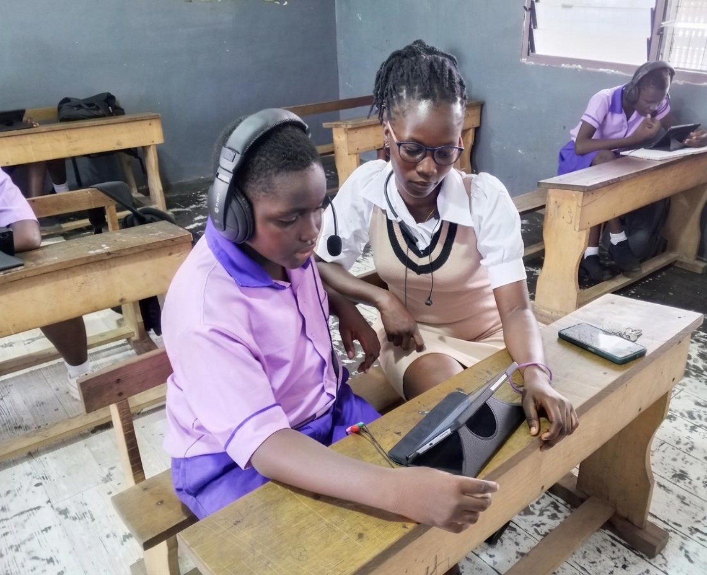
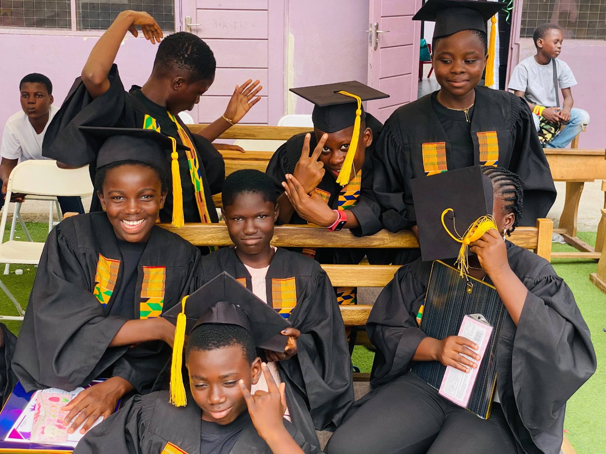

Kindergarten (KG)
Early learning through guided activities, discovery, language, number concepts and social development.
A learning journey from early childhood through the basic school years.

Early learning through guided activities, discovery, language, number concepts and social development.

Building strong foundations in literacy, numeracy, problem-solving and learning habits.

Developing subject knowledge, independence, practical skills and preparation for the next stage.